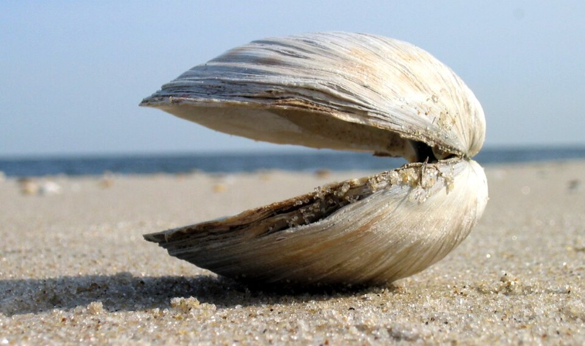
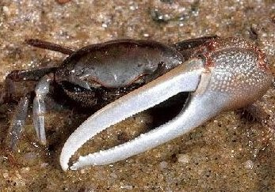
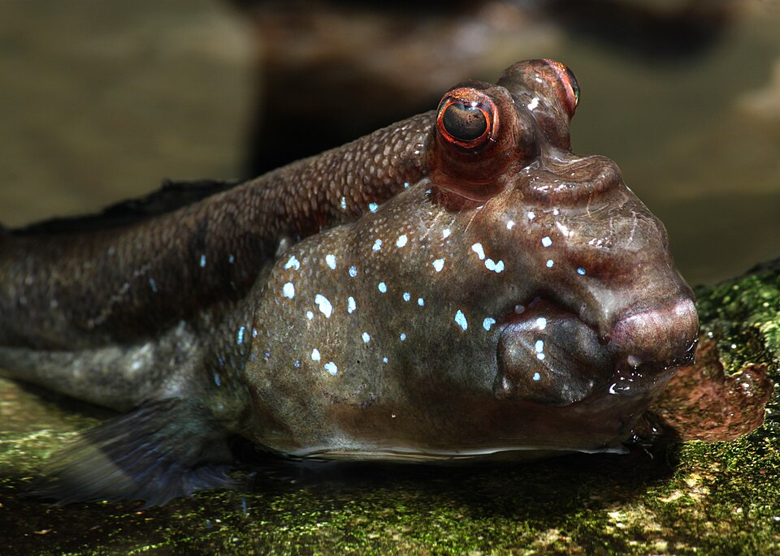
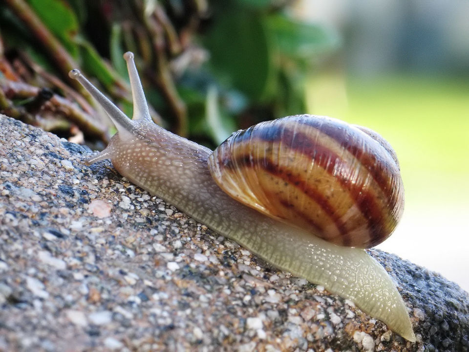

조개 · 수집 대상
부채처럼 퍼진 줄무늬와 바닥의 금빛 원을 찾으세요.
MUAN TIDAL FLAT
현실 공간에 갯벌을 펼치고
숨겨진 조개 5개를 찾아보세요.
도감을 확인한 뒤 카메라 체험이 시작됩니다.
BEFORE EXPLORATION
실제 생김새와 게임 속 3D 모형의 특징을 먼저 비교해 보세요.

부채처럼 퍼진 줄무늬와 바닥의 금빛 원을 찾으세요.

옆으로 뻗은 다리와 집게가 보여요. 누르면 감점됩니다.

튀어나온 눈과 길쭉한 몸, 움직이는 꼬리가 특징이에요.

작고 뾰족한 나선형 껍데기라 조개와 모양이 달라요.
사진은 형태 비교를 위한 대표 이미지이며 무안 현장 개체와 종·색이 다를 수 있습니다. 사진: NOAA(농게, Public Domain), Holger Krisp(망둥어, CC BY 3.0), macrophile(고둥 참고, CC BY 2.0), febb(조개, CC BY-SA 3.0) · Wikimedia Commons
표시가 나타나면 화면을 터치하세요.
MUAN TIDAL FLAT
모든 조개를 수집했어요!
완벽한 탐험이야! 갯벌 박사로 임명할게.
MUAN TIDAL FLAT GUIDE
미션에서 만난 생물과 갯벌의 가치를 더 알아보세요.
무안 갯벌 체험 콘텐츠 · 사용자 제공 이미지
갯벌의 진흙과 모래 사이에는 조개, 게, 고둥과 작은 물고기가 살아갑니다. 이 생물들은 유기물을 먹고 퇴적물을 뒤섞으며, 갯벌은 바닷물을 정화하고 탄소를 저장하는 데 도움을 줍니다.
갯벌 구멍은 게나 갯지렁이의 집일 수 있어요. 생물을 억지로 꺼내기보다 구멍 주변의 모래 알갱이, 이동 흔적과 먹이 활동을 천천히 관찰해 보세요.
전시와 생태 교육을 통해 갯벌의 형성 과정과 서식 생물을 알아볼 수 있어요. 실제 방문 전에는 공식 안내에서 운영 시간, 체험 프로그램과 물때를 확인하는 것이 좋아요.
보호 생물과 어린 개체는 눈으로만 보고, 쓰레기는 반드시 되가져가세요. 미끄러운 곳에서는 장화를 착용하고 정해진 탐방 구역과 안전 안내를 따라야 합니다.